D'une semaine à l'autre, notre liste de courses change peu.
Utilisez cet outil pour établir, sauvegarder et modifier votre liste de courses.
Description
Cette application web permet de créer et de gérer une liste de courses à partir d'une liste de
produits statiques.
Les utilisateurs peuvent ajouter des produits à leur liste, enregistrer et recharger la liste pour
des modifications ultérieures, ainsi que générer une liste de courses au format texte.
Technologies utilisées
JavaScript : Pour la création des éléments HTML et la logique de l'application.
HTML5 : Pour la structure de base de l'interface utilisateur.
CSS : Pour le style et la mise en page.
Utilisation
Pour utiliser l'application, il vous suffit de cloner ce dépôt et d'ouvrir le
fichier `index.html` dans votre
navigateur web:
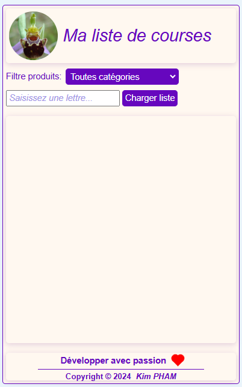
Vous pouvez filtrer les produits par catégorie:
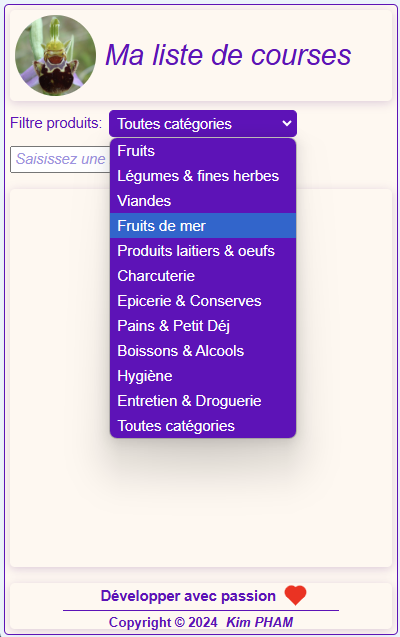
Le choix d'un produit se fait dans une liste suite à la saisie des premières
lettres du produit ou du caractère *:
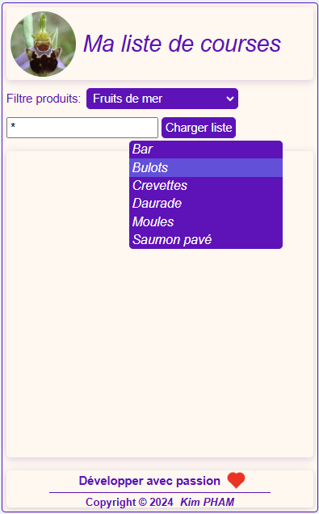
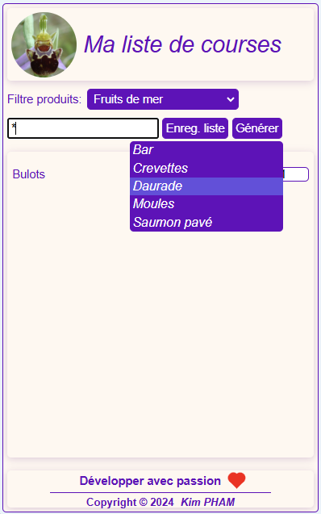
La sélection d'un produit l'ajoute automatiquement dans une liste:
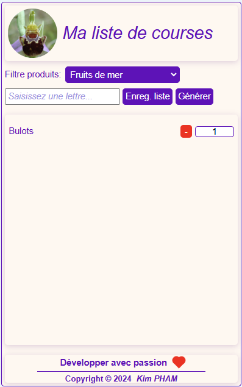
Dans la liste des produits sélectionnés, utilisez le bouton
pour supprimer un produit de la liste:
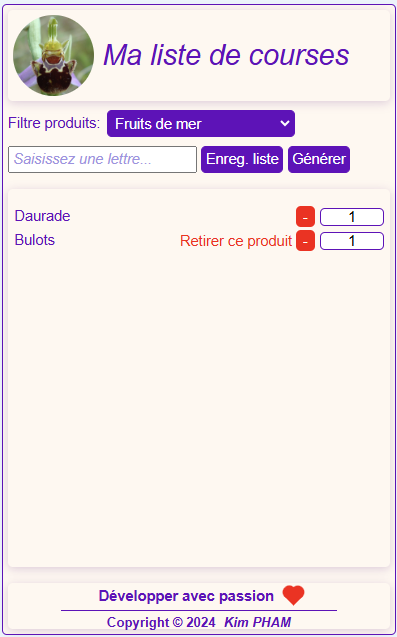
Vous pouvez modifier les quantités par défaut:
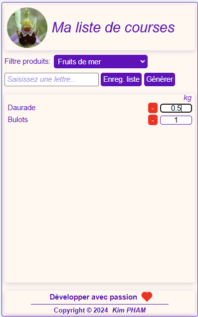
Si besoin, sauvegardez votre liste...
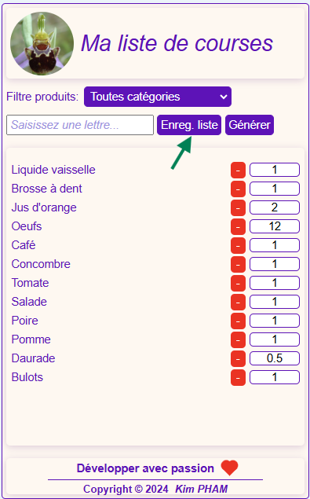
...pour la reprendre plus tard:
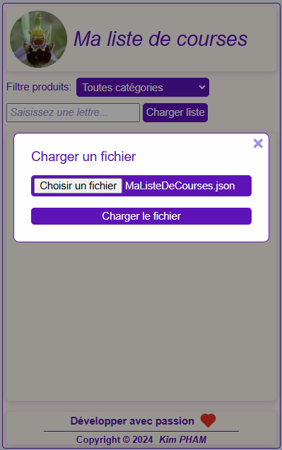
La liste chargée est triée par ordre alphabétique:
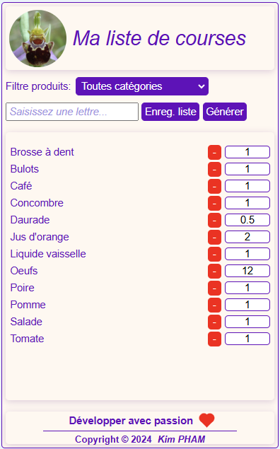
On peut y apporter des modifications:
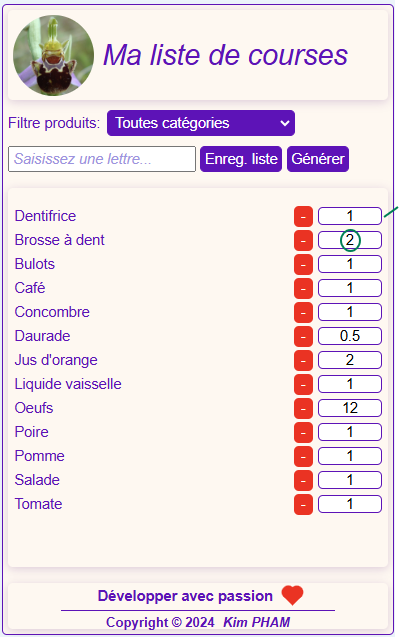
Le bouton générer permet d'avoir dans un fichier texte (.txt)...
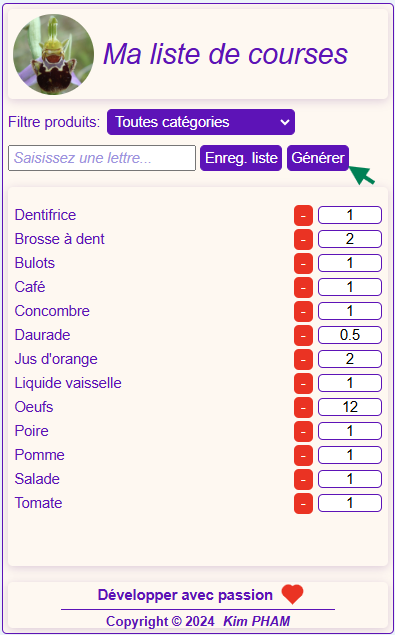
...votre liste de courses classée par catégorie et par nom :
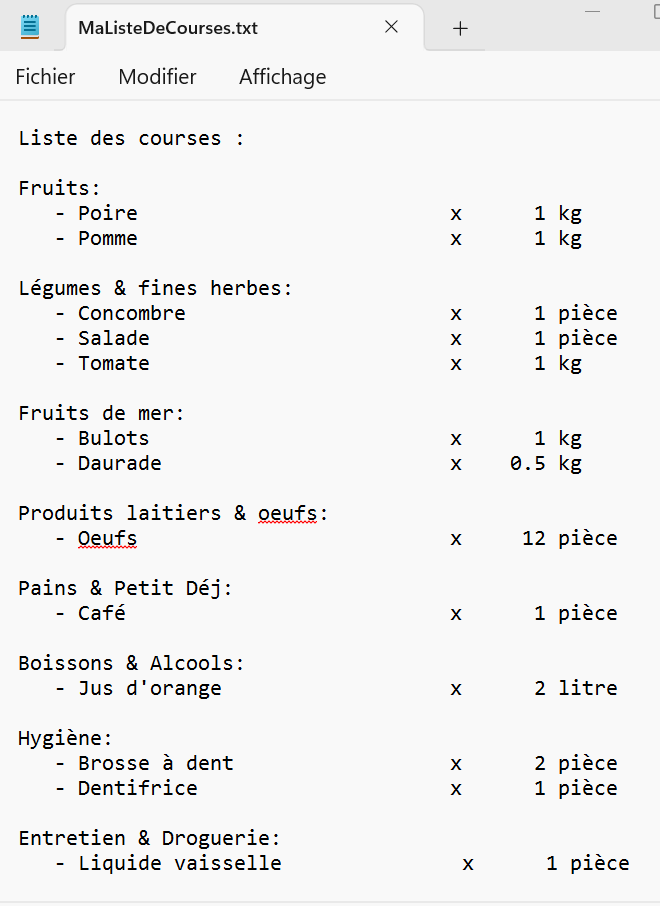